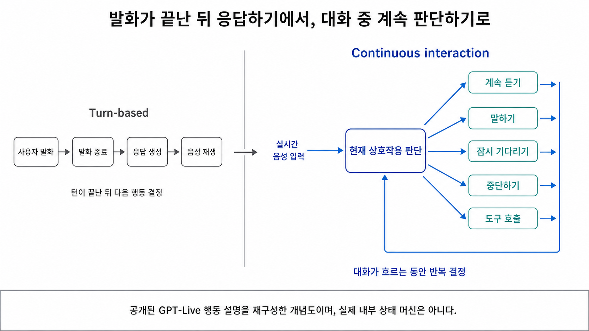

OpenAI는 실시간 음성을 어떻게 다시 설계했나
음성 AI가 달라졌다는 말을 들으면 먼저 음질을 떠올리기 쉽다. 발음이 자연스러워졌고, 억양이 사람에 가까워졌으며, 답변이 더 빨리 시작된다는 식이다. 하지만 OpenAI가 GPT-Live와 Realtime API를 통해 다루려 한 문제는 음성 합성 품질 하나보다 넓다.
기존 음성 AI는 대화를 완성된 발화들의 연속으로 처리했다. 사용자가 말을 끝내면 시스템이 입력을 해석하고, 답을 만든 뒤, 음성으로 재생한다. 모델이 음성을 직접 처리하게 된 뒤에도 이 순서는 상당 부분 남았다. 사용자가 잠시 멈췄는지 정말 끝났는지 판단하고, 그제야 assistant의 차례를 시작하는 방식이다.
GPT-Live가 제시한 변화는 이 대화 구조를 다시 정의하는 데 있다. 공식 발표에 따르면 GPT-Live는 입력을 계속 처리하면서 출력을 생성하고, 말할지, 더 들을지, 잠시 기다릴지, 끼어들지, 도구를 호출할지를 반복해서 결정한다. Realtime API는 이와 별개의 공개 API 제품이지만, 음성 상호작용을 Session·Conversation·Response와 세밀한 event lifecycle로 제어할 수 있게 한다.
OpenAI의 실시간 음성 전략은 더 좋은 음성 합성 하나가 아니라, 음성 상호작용을 continuous control loop로 바꾸고 interaction·execution·control plane을 분리하는 방향이다.
이 글은 GPT-Live나 Realtime 모델을 직접 benchmark한 실험기가 아니다. OpenAI의 공식 발표, 시스템 카드와 개발자 문서에 공개된 계약을 연결해 읽은 architecture reading이다. GPT-Live 제품군과 공개 API 모델 gpt-realtime-2.1은 별개로 다루며, 공개되지 않은 내부 구현은 추정하지 않는다.
단일 speech-to-speech 모델에도 turn 문제는 남았다
초기 ChatGPT Voice는 세 모델을 직렬로 연결했다. OpenAI의 설명에 따르면 speech-to-text 모델이 음성을 텍스트로 바꾸고, 언어 모델이 답을 만든 다음, text-to-speech 모델이 이를 다시 음성으로 변환했다.
사용자 음성
→ Speech-to-Text
→ Language Model
→ Text-to-Speech
→ Assistant 음성이 구조는 처음으로 frontier model과 음성으로 대화할 수 있게 했지만 대가가 있었다. OpenAI는 모델 사이를 거치며 정보가 손실될 수 있었고, 응답이 느리고 경직됐다고 설명한다. 여러 단계를 직렬로 통과하는 만큼 지연이 누적되고, 음성에 들어 있는 속도·억양·주저·타이밍 같은 정보가 텍스트 표현으로 모두 보존되지 않을 수 있다.
마지막 문장은 공개된 내부 feature 목록이 아니라 “information could be lost across models”라는 공식 설명을 아키텍처 관점에서 해석한 것이다. OpenAI는 구체적으로 어떤 음성 특징이 어느 representation 경계에서 손실됐는지 공개하지 않았다.
Advanced Voice Mode에서는 음성의 입력과 출력을 하나의 모델이 처리하면서 직렬 변환의 경계가 줄었다. 그러나 OpenAI는 이 방식 역시 discrete turn으로 동작했다고 설명한다. 모델이 음성을 직접 이해하고 생성해도 대화가 다음과 같은 순서를 유지하면 문제가 남는다.
사용자 발화
→ 발화 종료 판정
→ assistant 응답 생성
→ assistant 발화
→ 다음 사용자 발화사용자가 잠깐 생각하느라 멈췄는데 시스템이 발화 종료로 판단할 수 있다. 배경 소음을 새로운 입력이나 turn boundary로 오인할 수도 있다. 반대로 시스템이 사용자의 발화가 끝났다는 확신을 기다리느라 반응이 늦어질 수도 있다.
따라서 speech-to-speech와 full-duplex는 같은 말이 아니다. Speech-to-speech는 중간 STT·TTS 호출 없이 음성을 직접 처리하는 모델 경로를 가리킬 수 있다. Full-duplex interaction은 그 위에서 입력과 출력이 시간적으로 겹칠 때 누가 말하고, 듣고, 기다리고, 멈출지를 계속 조정하는 문제까지 포함한다.
즉 병목은 모델을 몇 개 사용했는가에만 있지 않았다. 발화 종료 판단, 응답 생성 허가, 음성 재생 시작이 하나의 turn boundary에 묶여 있다는 점도 문제였다.
GPT-Live는 음성을 continuous interaction으로 다룬다
OpenAI는 GPT-Live를 full-duplex architecture로 소개했다. 공식 발표와 시스템 카드에 따르면 GPT-Live 모델은 명확한 사용자 turn이 끝나기를 기다리는 대신 계속 듣고 응답할 수 있다. 별개의 메시지들을 순서대로 처리하는 것이 아니라, 출력을 생성하는 동안에도 입력을 지속적으로 처리한다.
이 변화의 핵심은 단순한 양방향 스트리밍이 아니다. 네트워크가 음성을 동시에 송수신할 수 있다는 설명만으로는 사람이 느끼는 대화 차이를 설명하기 어렵다. OpenAI가 공개한 핵심은 interaction decision이다. 공식 발표에 따르면 GPT-Live는 1초에도 여러 차례 다음 행동을 결정할 수 있다.
- 지금 말할 것인가
- 계속 들을 것인가
- 잠시 멈출 것인가
- 상대의 말에 끼어들 것인가
- 도구를 호출할 것인가
시스템 카드는 이를 pause, interruption, 말하는 속도의 변화를 따라가면서 지금 답할지 더 들을지 결정하는 방식으로 설명한다. 이를 아키텍처적으로 읽으면 음성 대화가 입력 turn → 출력 turn의 교대 과정에서 계속 갱신되는 제어 루프로 바뀐 셈이다.

그림 1. GPT-Live의 공개 설명을 제어 관점에서 재구성한 개념도. 실제 내부 상태 머신을 나타낸 그림은 아니다.
다만 여기까지가 공개 자료로 확인되는 동작의 범위다. 실제 decision loop가 몇 Hz로 동작하는지, 이 선택들이 별도 controller의 상태인지 모델이 생성하는 action인지, audio tokenizer와 chunk가 어떻게 구성되는지는 공개되지 않았다. 별도의 VAD나 classifier 없이 단일 neural network가 모든 turn decision을 수행한다고 단정할 수도 없다. Echo cancellation이나 동시 발화가 model context에 들어가는 방식 역시 확인되지 않았다.
제품과 모델 이름도 구분해야 한다. GPT-Live는 ChatGPT Voice의 제품군이고 공개된 모델은 GPT-Live-1과 GPT-Live-1 mini다. gpt-realtime-2.1은 개발자가 사용할 수 있는 공개 API 모델이다. 두 계열은 모두 실시간 음성 상호작용을 다루지만, 동일한 모델인지, 한쪽이 다른 쪽에서 파생됐는지, 같은 런타임을 공유하는지는 공개 자료만으로 확인할 수 없다.
Realtime API는 대화를 Session·Conversation·Response로 나눈다
GPT-Live 발표가 continuous interaction이라는 제품 방향을 보여준다면, Realtime API 문서는 개발자가 조작할 수 있는 상태와 event 계약을 공개한다.
공식 문서에서 Realtime Session은 모델과 연결된 클라이언트 사이의 stateful interaction이다. 그 안에는 세 가지 중요한 객체가 있다.
Session
├─ 상호작용 설정
└─ Conversation
├─ 사용자 입력 Item
├─ assistant 출력 Item
├─ function_call Item
└─ function_call_output Item
Response
└─ 한 번의 모델 생성과 lifecycleSession은 모델, 음성 형식, voice, VAD, reasoning과 사용 가능한 도구 같은 상호작용 설정을 제어한다. Conversation은 사용자와 모델이 주고받은 Item을 보존한다. Response는 오디오나 텍스트 Item을 생성하는 실행 단위다.
문서의 객체 구분을 아키텍처적으로 읽으면 Conversation은 이어지는 논리적 대화 상태, Response는 생성·완료·취소할 수 있는 실행에 가깝다. 다만 OpenAI가 이를 공식적으로 memory plane과 execution plane이라고 부르는 것은 아니다.
Server VAD와 semantic VAD
Realtime API에서 VAD는 사용자가 말하기 시작하거나 멈춘 시점을 자동으로 감지한다. Speech-to-speech session에서는 기본으로 활성화되지만 필요하면 끌 수 있다.
server_vad는 침묵 구간을 기준으로 오디오를 나눈다. Threshold, 앞부분을 보존하는 prefix_padding_ms, 발화 종료를 결정하는 silence_duration_ms 등을 조정할 수 있다. 이는 비교적 명시적인 음향 기반 turn detection이다.
semantic_vad는 사용자가 말한 내용에 근거해 발화가 완료됐다고 판단할 가능성을 본다. 완료 가능성이 낮으면 더 기다리고, 높으면 긴 timeout 없이 turn을 끝낼 수 있다. eagerness로 얼마나 빨리 응답을 시작할지도 조절한다. 공식 문서는 semantic VAD가 speech-to-speech 대화에서 사용자를 끊을 가능성을 줄일 수 있다고 설명한다.
여기서 중요한 점은 GPT-Live의 continuous interaction과 공개 API의 VAD 계약을 동일시하지 않는 것이다. GPT-Live가 내부적으로 Realtime API의 semantic_vad를 그대로 사용한다는 근거는 없다. 반대로 공개 Realtime API에서는 자연스러운 음성 경험도 여전히 명시적인 turn detection 설정과 event를 통해 제어된다.
Reasoning effort와 대화 지연
gpt-realtime-2.1은 configurable reasoning effort를 지원한다. 공개 단계는 minimal, low, medium, high, xhigh다. OpenAI는 대부분의 production voice agent에서 low로 시작하고, 작업 복잡도와 허용 가능한 지연, 실패 비용에 따라 조정하라고 안내한다.
이 설정은 실시간 음성에서도 reasoning depth와 latency가 별개의 운영 변수가 됐다는 뜻이다. 모든 대화에 가장 높은 reasoning을 적용하면 첫 반응과 상호작용 속도가 나빠질 수 있다. 반대로 복잡한 판단에 effort가 부족하면 응답 품질이 떨어질 수 있다.
다만 reasoning effort가 별도 reasoning model 호출을 뜻하는지, 같은 모델 안에서 계산 budget을 바꾸는 것인지는 공개 모델 문서만으로 확인할 수 없다. 설정의 효과와 내부 구현을 구분해야 한다. Model, effort, prompt와 tool 구성을 나눠 봐야 한다는 관점은 GPT-5.6 가이드를 읽으며 다시 정한 것에서도 다뤘다.
도구 호출도 Conversation Item으로 남는다
Realtime API에서는 function을 session 전체 또는 개별 response에 등록할 수 있다. 모델이 도구가 필요하다고 판단하면 직접 외부 시스템을 실행하는 대신 function-call Item을 만든다.
모델이 function_call 생성
→ name, call_id, arguments 전달
→ 애플리케이션이 실제 코드 실행
→ function_call_output Item 생성
→ 같은 call_id로 결과 연결
→ 새 Response 생성
→ 모델이 결과를 음성이나 텍스트로 설명공개 계약에서 모델의 역할은 typed function-call을 만드는 데까지다. 실제 실행, 권한 확인, 실패 처리와 재시도는 애플리케이션이 담당한다. 이는 음성 interaction과 외부 execution을 분리하는 중요한 경계다. “음성 모델이 도구를 직접 실행한다”는 표현은 이 책임 분리를 가린다.
Event trace로 보면 interruption이 달라 보인다
사용자가 assistant의 발화에 끼어드는 상황은 continuous interaction을 가장 구체적으로 보여준다. 겉으로는 “AI가 말을 멈춘다”는 하나의 동작처럼 보이지만 Realtime API에서는 여러 상태 전이로 나뉜다.
WebSocket 연결에서 VAD가 사용자 발화를 감지한 경우의 핵심 흐름은 다음과 같다.
assistant audio 생성·재생
response.output_audio.delta
↓
사용자가 말하기 시작
input_audio_buffer.speech_started
↓
진행 중 Response 취소
response.cancelled
↓
클라이언트가 로컬 playback 중단
↓
실제로 재생된 길이 계산
↓
conversation.item.truncate
item_id
content_index
audio_end_msresponse.cancelled는 현재 생성 중인 실행을 멈춘다. 로컬 playback stop은 이미 클라이언트에 전달된 오디오가 더 재생되지 않게 한다. conversation.item.truncate는 생성됐지만 사용자가 듣지 않은 assistant audio를 Conversation에서 제거한다.
Response cancellation = 생성 실행 중단
Playback stop = 실제 출력 중단
Conversation truncate = 공유된 대화 기억 수정Truncation이 필요한 이유는 다음 대화를 실제 경험과 맞추기 위해서다. 모델이 긴 답변을 만들었지만 사용자가 앞부분만 듣고 끼어들었다면, 듣지 못한 뒷부분을 이미 공유한 history로 남겨서는 안 된다. OpenAI 문서도 모델이 어디에서 중단됐는지 알아야 자연스럽게 대화를 이어갈 수 있다고 설명한다.
WebRTC와 SIP에서는 서버가 출력 오디오 버퍼를 관리하므로 사용자 interruption이 발생하면 재생되지 않은 오디오의 truncation을 자동 처리한다. WebSocket에서는 클라이언트가 playback을 소유하기 때문에 실제 재생 길이를 계산하고 truncate event를 보내야 한다. 이 차이는 추상적인 “중단 지원”보다 playback ownership이 어디에 있는지가 중요하다는 점을 보여준다.
다만 WebRTC나 SIP의 자동 처리를 서버가 모든 기기와 환경에서 사용자의 실제 청취 경험을 완벽하게 안다는 뜻으로 넓히면 안 된다. 공식 문서에서 확인되는 것은 해당 연결에서 서버가 관리하는 출력 버퍼와 truncation 계약이다.
이 event trace는 AI 채팅 UX는 전체 응답 시간보다 첫 글자에서 갈린다에서 다룬 end-to-end 경로가 음성에서는 어떻게 확장되는지도 보여준다. 텍스트 채팅에서는 첫 token과 첫 화면 렌더링이 달랐다면, 음성에서는 생성 취소와 실제 재생 중단, 대화 기억 수정이 다시 분리된다.
Continuous interaction과 깊은 작업을 분리한다
실시간 음성 interaction은 빠른 판단을 요구한다. 더 들을지, 지금 답할지, 사용자가 끼어들었는지 판단하는 일은 대화의 짧은 시간축에 있다. 반면 검색, 깊은 reasoning과 여러 도구를 거치는 작업은 더 오래 걸린다.
OpenAI는 GPT-Live 발표에서 이 두 역할을 분리했다고 직접 밝혔다. GPT-Live는 continuous interaction을 담당하고, 검색·추론·더 agentic한 능력이 필요한 작업은 다른 모델에 위임할 수 있다고 설명했다. 이렇게 하면 복잡한 작업이 배경에서 진행되는 동안에도 대화를 계속할 수 있다.
출시 발표에는 더 구체적인 사실도 있다.
“At launch, GPT-Live will use GPT-5.5 in the background.”
따라서 출시 시점에 GPT-Live가 GPT-5.5를 background model로 사용한다고 발표했다고 쓰는 것은 가능하다. 그러나 이 문장을 현재도 GPT-5.5가 고정 위임 대상이라는 뜻으로 확대할 수는 없다. 모든 GPT-Live 요청이 GPT-5.5로 전달된다는 뜻도 아니며, gpt-realtime-2.1이 GPT-5.5에 reasoning을 위임한다는 근거도 아니다.
이를 아키텍처적으로 읽으면 interaction plane과 execution plane의 역할은 다음처럼 나뉜다.
Interaction plane
- 계속 듣기
- 말하기와 기다리기
- interruption 처리
- 대화 흐름 유지
- 작업 결과를 사용자에게 설명
Execution plane
- 검색
- 깊은 추론
- 도구 실행
- 장시간 작업
- 완료·실패·취소 처리여러 모델과 Agent의 협업을 하나의 surface로 제공할 때 생기는 질문은 여러 모델의 협업을 하나의 모델처럼 제공한다면에서도 살펴봤다. 음성에서는 모델 선택뿐 아니라, 긴 작업이 진행되는 동안 interaction을 어떻게 유지할지가 추가된다.
Responses background mode는 구현 재료이지 내부 구조의 증거는 아니다
OpenAI의 Responses API는 장시간 작업을 위한 background mode를 공개하고 있다. background: true로 작업을 비동기 실행하면 response object는 queued, in_progress, 이후 terminal state로 이동한다. 클라이언트는 상태를 polling할 수 있고, 연결이 끊겨도 작업은 계속된다. Event의 sequence cursor를 이용해 stream을 이어 받을 수 있으며 진행 중인 response를 명시적으로 취소할 수도 있다.
이 primitive는 continuous voice interaction과 긴 작업을 분리하는 reference architecture에 잘 맞는다. 하지만 이것은 공개 API를 조합해 만들 수 있는 구조다. GPT-Live 또는 ChatGPT Voice가 내부적으로 Responses API의 public endpoint를 호출한다는 증거는 없다. GPT-Live의 위임이 background mode로 구현됐는지, interruption이 위임된 작업까지 자동으로 취소하는지, 결과를 Conversation Item으로 삽입하는지도 공개되지 않았다.
OpenAI가 공개한 것은 두 가지다. 하나는 interaction과 deeper work를 분리한다는 제품 전략이다. 다른 하나는 장시간 작업의 identity·상태·stream 재개·취소를 제공하는 API primitive다. 둘이 실제 ChatGPT 내부에서 어떻게 연결되는지는 알 수 없다.
Safety도 말이 끝난 뒤가 아니라 말하는 도중 개입한다
Continuous interaction에서는 안전성도 완성된 답변을 사후 검사하는 방식만으로 다루기 어렵다. 위험한 음성이 이미 재생된 뒤라면 이후의 차단은 늦을 수 있기 때문이다.
GPT-Live 시스템 카드에 따르면 입력과 생성 출력은 대화가 진행되는 동안 검사된다. 잠재적으로 안전하지 않은 출력이 탐지되면 시스템은 응답을 더 안전한 방향으로 바꾸거나, 현재 발화를 중단하거나, 음성 안전 메시지를 재생할 수 있다. 텍스트로 지원 자료를 제시하거나 위험이 높은 경우 음성 대화 자체를 종료할 수도 있다.
이를 architecture 관점에서 보면 safety가 하나의 최종 moderation verdict가 아니라 interaction 상태를 바꾸는 control plane으로 확장된다. 여기서 control plane이라는 표현은 공식 제품명이 아니라 공개된 개입 동작을 설명하기 위한 해석이다. Classifier가 어디에 배치되는지, 어느 길이의 오디오 chunk를 검사하는지, detection latency와 threshold가 무엇인지는 공개되지 않았다.
복잡한 작업을 다른 모델에 위임했을 때의 안전성도 interaction model 하나로 끝나지 않는다. 시스템 카드에 따르면 위임 결과는 실제 작업을 수행한 underlying model의 safety training을 반영한다. 따라서 전체 안전성은 음성 interaction, 위임 정책, 작업 모델, 도구 권한과 streaming intervention이 함께 만드는 결과로 봐야 한다.
SynthID는 안전 판정이 아니라 출처 신호다
OpenAI는 지원되는 GPT-Live 생성 오디오에 SynthID watermark가 포함된다고 발표했다. 공개 verification tool은 지원되는 오디오 파일의 watermark를 확인할 수 있고, 개발자가 provenance 검사를 workflow에 넣을 수 있는 API도 제공된다.
SynthID의 역할은 콘텐츠가 어디에서 생성됐는지 판단하는 데 도움이 되는 출처 신호를 남기는 것이다. 발화 내용이 사실인지, 안전한지, 화자가 누구인지까지 증명하지 않는다.
SynthID 감지
≠ 내용이 사실임
≠ 내용이 안전함
≠ 실제 화자의 신원 확인
SynthID 미감지
≠ 사람이 만든 콘텐츠로 확정Provenance signal은 제거되거나 지원되지 않는 경로에서 생성될 수 있으므로, watermark가 검출되지 않았다는 사실만으로 OpenAI 생성물이 아니라고 결론 내릴 수도 없다. Streaming safeguard가 생성 중 행동을 통제하는 층이라면 SynthID는 생성된 오디오의 출처를 추적하는 별도의 층이다.
음성 모델보다 interaction system을 봐야 한다
OpenAI의 실시간 음성 전략을 음질이나 응답 속도 하나로 요약하면 중요한 변화가 빠진다.
Cascaded 구조에서는 STT·LLM·TTS 사이에서 시간과 정보가 손실됐다. 단일 speech-to-speech 모델은 이 경계를 줄였지만 discrete turn 문제까지 없애지는 못했다. GPT-Live는 입력과 출력을 겹쳐 처리하면서 말하기·듣기·대기·중단·도구 호출을 반복적으로 결정하는 full-duplex 방향을 제시했다.
공개 Realtime API는 자연스러운 대화를 추상적인 모델 능력에만 맡기지 않는다. Session·Conversation·Response를 나누고, server VAD와 semantic VAD, response lifecycle, function-call Item과 truncation event를 명시적인 계약으로 제공한다. Event trace를 따라가 보면 interruption도 생성 취소, 실제 재생 중단, 대화 기억 수정이라는 서로 다른 제어 문제로 나뉜다.
깊은 작업은 continuous interaction에서 분리된다. 출시 시점 GPT-Live가 GPT-5.5를 background model로 사용한다는 사실은 공개됐지만, 현재 target과 내부 transport는 공개되지 않았다. Responses background mode는 이런 구조를 구현할 수 있는 유용한 primitive지만 ChatGPT 내부 구현의 증거는 아니다.
Safety와 provenance도 별도 층으로 나뉜다. Streaming safeguard는 모델이 말하는 도중 개입하고, SynthID는 지원되는 생성 오디오에 출처 신호를 남긴다.
결국 Realtime 음성이 다른 이유는 단순히 더 빨리, 더 자연스럽게 말하기 때문만은 아닌 것 같다. 음성 입력을 기다렸다가 답하는 메시지 처리에서 벗어나, interaction을 계속 갱신되는 control loop로 다루기 시작했기 때문이다. 그리고 OpenAI가 공개한 기술 전략의 중심에는 이 loop를 복잡한 실행 작업과 분리하고, 둘을 session·event·safety 계약으로 제어하려는 방향이 있다고 생각한다.
참고자료
- OpenAI, Introducing GPT-Live
- OpenAI Deployment Safety Hub, GPT-Live System Card
- OpenAI Developers, GPT-Realtime-2.1
- OpenAI Developers, Realtime API
- OpenAI Developers, Realtime conversations
- OpenAI Developers, Realtime VAD
- OpenAI Developers, Realtime models prompting guide
- OpenAI Developers, Background mode
- OpenAI, Advancing content provenance
- OpenAI, Content verification tool